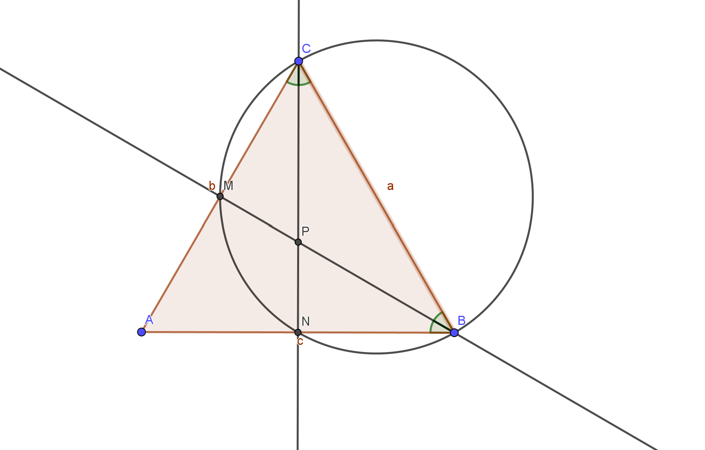
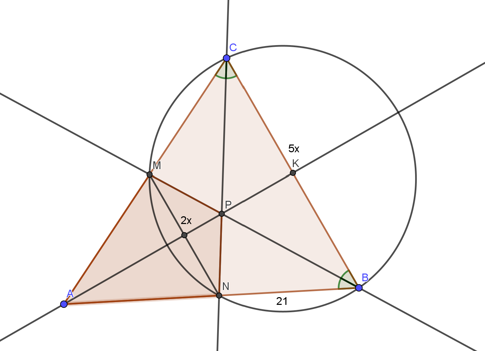

Условие:
В треугольнике \( ABC \) проведены биссектрисы \( BM \) и \( CN \). Оказалось, что точки \( B \), \( C \), \( M \) и \( N \) лежат на одной окружности.
a) Докажите, что треугольник \( ABC \) равнобедренный.
b) Пусть \( P \) — точка пересечения биссектрис треугольника \( ABC \). Найдите площадь четырёхугольника \( AMPN \), если \( MN : BC = 2 : 5 \), а \( BN = 21 \).
Чертеж к а)

а)
Вписанные углы \( \angle NCM \) и \( \angle MBN \) опираются на одну и ту же дугу, следовательно, они равны. Поскольку
\[ \frac{1}{2}\angle ACB = \angle MCN = \angle MBN = \frac{1}{2}\angle ABC, \]
получаем \( \angle ACB = \angle ABC \), то есть треугольник \( ABC \) равнобедренный.
Чертеж к b)

b)
Поскольку
\[ \angle BCN = \angle MCN = \angle MBN = \angle MBC, \]
получаем, что \( BN = NM = MC = 21 \) и прямая \( MN \) параллельна прямой \( BC \). Отрезок \( BC \) равен \( \frac{105}{2} \).
Пусть \( AK \) — биссектриса, медиана и высота треугольника \( ABC \). Прямая \( AK \) проходит через точку \( P \) — центр вписанной окружности. Треугольник \( ANM \) подобен треугольнику \( ABC \), следовательно,
\[ \frac{AN}{AB} = \frac{MN}{BC} = \frac{2}{5}. \]
Тогда
\[ AB = \frac{5}{3}BN = 35, \]
\[ AK = \sqrt{AB^2 - BK^2} = \sqrt{35^2 - \left(\frac{105}{4}\right)^2} = \frac{35\sqrt{7}}{4}. \]
Площадь треугольника \( ABC \) равна
\[ S_{ABC} = \frac{1}{2}AK \cdot BC = \frac{1}{2}PK \cdot (AB + AC + BC), \]
а значит
\[ PK = \frac{AK \cdot BC}{AB + AC + BC} = \frac{\frac{35\sqrt{7}}{4} \cdot \frac{105}{2}}{35 + 35 + \frac{105}{2}} = \frac{15\sqrt{7}}{4}, \]
\[ AP = AK - PK = \frac{35\sqrt{7}}{4} - \frac{15\sqrt{7}}{4} = 5\sqrt{7}. \]
В четырёхугольнике \( AMPN \) диагонали \( AP \) и \( MN \) перпендикулярны, следовательно, его площадь равна
\[ S_{AMPN} = \frac{1}{2}AP \cdot MN = \frac{1}{2} \cdot 5\sqrt{7} \cdot 21 = \frac{105\sqrt{7}}{2}. \]
Ответ: b) \( \frac{105\sqrt{7}}{2} \)